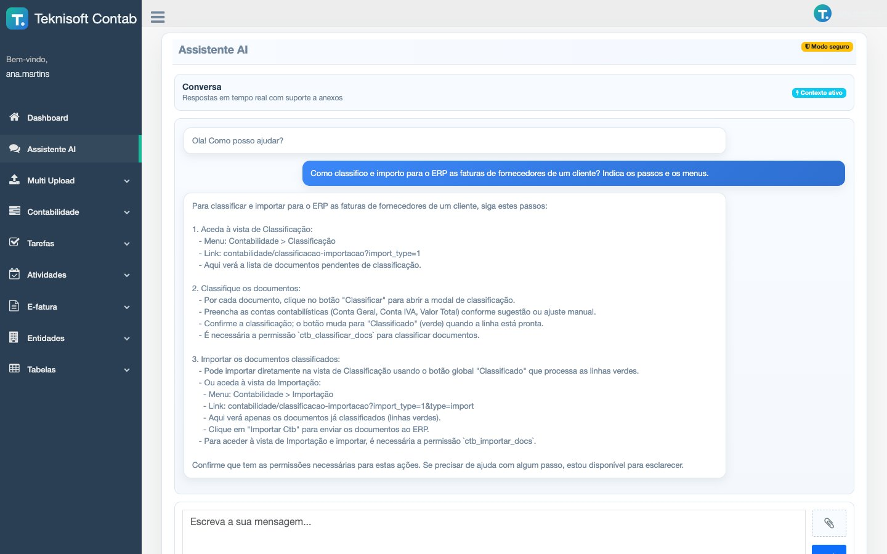
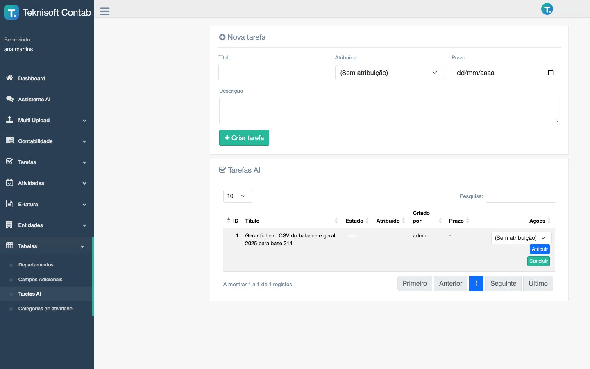

Assistente IA
Um assistente que fala português de Portugal, conhece os dados do gabinete e do ERP, respeita as permissões de cada utilizador e nunca altera nada sem autorização.
O que faz
Consulta
Documentos importados, movimentos e plano de contas no ERP, E-fatura (local e, se pedido, remoto), envios de SAF-T.
Classifica
Propõe contas para documentos, explica a proposta e lê anexos (PDF) por OCR, incluindo anotações manuscritas.
Age (com autorização)
Aplica sugestões, cria tarefas internas, aprova ou rejeita documentos, abre lançamentos.
Orienta
Indica onde fazer cada coisa na aplicação, com o caminho de menu e a ligação.
Usar o assistente
Menu Assistente AI (permissão Assistente AI - Acesso), ou o chat flutuante em todas as páginas, se o tiver ativo no seu perfil.

- Enter envia, Shift+Enter muda de linha.
- 📎 anexa ficheiros (por exemplo, uma fatura em PDF para o assistente ler).
- Útil / Não útil e um comentário ajudam a melhorar as respostas.
- Quando o assistente gera um ficheiro (por exemplo, uma listagem), fica disponível para download numa ligação temporária.
Modo seguro
Com o modo seguro ativo (distintivo amarelo no topo), o assistente só lê. Se lhe pedir uma alteração, explica o que faria e pergunta: "Posso executar esta ação, mas o modo seguro está ativo. Queres que eu prossiga?"
O modo seguro define-se por utilizador (Utilizadores) e há um valor por omissão para novos utilizadores (Definições > AI). Mesmo fora do modo seguro, cada ação exige a permissão correspondente (criar tarefas, abrir lançamentos, sugerir contas, aprovar documentos).
Memória
O assistente guarda contexto entre sessões: instruções que lhe dá, tarefas contabilísticas relevantes e as correções de classificação. Comandos disponíveis na conversa:
| Comando | Efeito |
|---|---|
memoriza: ... | Guarda explicitamente uma instrução. |
listar memorias | Mostra o que está memorizado. |
esquece: ... | Remove uma memória concreta. |
esquece memorias | Limpa a memória do utilizador. |
Mensagens de correção ("errado", "esquece", "ignora") nunca são consolidadas como memória válida.
Identidade por empresa
Cada tenant pode dar ao assistente um nome e uma apresentação próprios (por exemplo, uma homenagem ao fundador do gabinete), resolvidos pelo NIF da empresa no login. Sem identidade definida, apresenta-se como "Assistente AI". As instruções gerais de tom e comportamento ficam em Definições > AI.
Princípios
- Nunca inventa valores, contas, movimentos ou classificações. Sem dados, responde que não encontrou informação suficiente.
- Respeita permissões: não mostra dados de empresas a que o utilizador não tem acesso.
- Não é consultor fiscal ou jurídico: apoia o trabalho, a decisão é do técnico.
Tarefas AI
Tabelas > Tarefas AI lista as tarefas internas criadas pelo assistente ou pela equipa, com estado, responsável e prazo.
